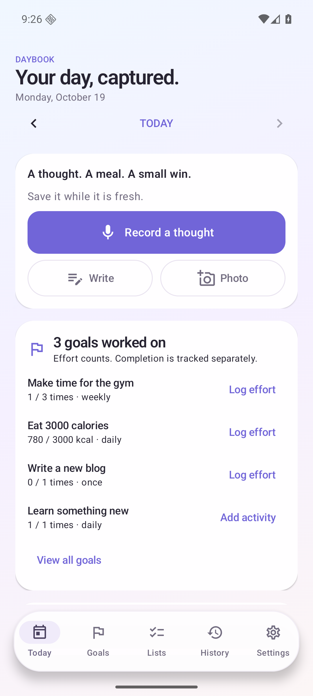
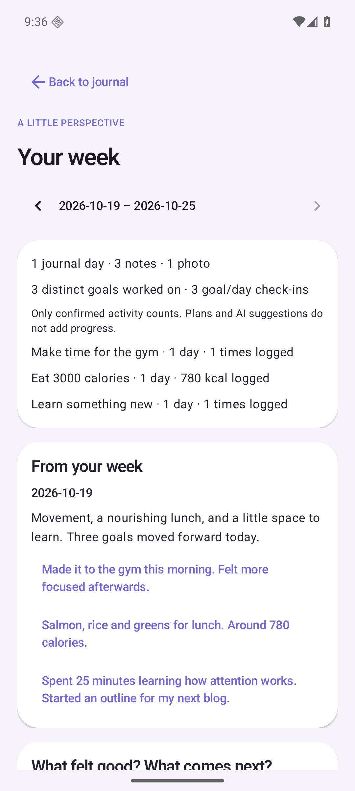

PROJECT NOTES / ON-DEVICE AI
A day, in your
own words.
Daybook is a native Android journal for the small things that make up a day: a thought on a walk, a meal worth remembering, a little progress toward a goal. Voice, text, and photos come together in a journal that keeps the original material alongside any AI reflection.
Explore the source ↗

Capture now. Reflect later.
Starting a note should take very little effort. Daybook offers a compact home-screen Record widget, a recording view with local draft text, and large pause, bookmark, and save controls. Recording can continue with the screen locked; a notification offers a way to stop and save.
Speech stays on the phone. After a one-time English model download, whisper.cpp transcribes recordings offline. Live text arrives in short batches, then a fuller transcription runs after saving. The WAV remains available for playback, with audio bookmarks and approximate transcript timestamps to return to a moment.

Choose where reflection happens.
Daily cleanup can run locally with Qwen2.5-1.5B through llama.cpp, or directly through OpenAI using the user’s own API key. Local reviews work with text and require a separate model download. Optional cloud reviews can also describe eligible journal photos. There is no automatic cloud fallback.
The two providers share the same source checks and approval rules. Cleaned writing, summaries, and suggestions are stored separately from original notes. Each generated review links back to its supporting entries, and edits mark an earlier review as outdated.
- Privacy choices: keep individual entries on-device, exclude selected notes’ photos from future cloud reviews, and preview eligible content before a manual OpenAI request.
- Explicit progress: suggested goal activity and calorie estimates need confirmation. Mentioning a future plan does not count as completed work.
- Somewhere for the next thought: proposed new goals, to-dos, and ideas await approval before entering their own lists.
Progress without losing the story.
Daily, weekly, and one-time goals support checkboxes, numeric targets, and partial effort. The app calculates totals and the number of distinct goals worked on each day from confirmed activity. Calendar, search, streaks, and weekly reflections provide different ways back into the journal.

Recovery is part of the design.
Room stores journal data; WorkManager manages transcription, cleanup, and optional daily backups. Recently Deleted keeps notes recoverable for 30 days. Full passphrase-encrypted backups include original audio and photos, and automatic folder backups retain the latest seven successful copies. API credentials and downloaded models stay outside those exports.
Retries and cancellation preserve saved originals. Model downloads are checksum-verified and resumable. Biometric/device-credential app lock, reduced animations, light and dark themes, and visible processing status round out the daily experience.
What has been verified.
The 0.5.0 beta passed 47 JVM tests and 26 regular Android workflow checks. Separate emulator tests exercised real offline speech and local LLM inference, an encrypted audio/photo backup round trip, and search in a 1,000-entry synthetic journal. The signed APK and Android App Bundle passed package checks.
Daybook is a personal beta, not a published Play Store app. Physical Galaxy S26 Ultra microphone behavior, fingerprint hardware, thermal performance, and Samsung background scheduling remain unverified. No live OpenAI request was made during development. Emulator results do not establish phone performance or broad model quality.
Verification record ↗
Architecture and recovery design ↗
Publishing preparation ↗